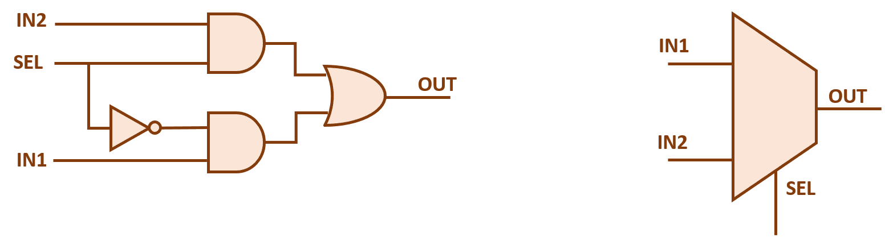
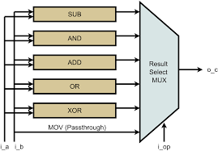
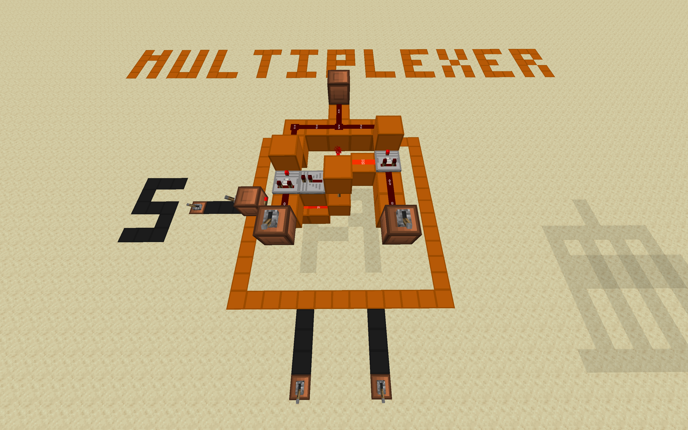

Multiplexers are more applicable the further you are in building your PC, but they are vastly important in helping you pick which operation to perform.
Multiplexers, or muxes, are devices that allow us to select one of n-inputs and forward that signal to the output wire.
Here is what a 2x1 mux looks like in digital logic. Note that the triangle is a NOT gate (inverter), the second layer contains two AND gates, and the third layer consists of one OR gate.
| Select Line (S0) | Input I0 | Input I1 | Output (Y) |
|---|---|---|---|
| 0 | 0 | X | 0 |
| 0 | 1 | X | 1 |
| 1 | X | 0 | 0 |
| 1 | X | 1 | 1 |
Recall in the introduction of the ALU, we mentioned that we use an opcode to decide which operation we want to perform. Depending on the number of operations your ALU has, you can make a nx1 mux to only output the result from the operation we want.
Muxes also are extremely useful when operations have different purposes. Note that although add and addi operations have three operands, the addi shares the same write register and input register, $t0. Or observe the lw operation that puts a value into a register, but it only has two operands. How would our ALU handle inputs of different formats? Muxes can help you pick and choose which bits represent what.
Note, muxes and decoders are alike in that they have multiple inputs, BUT they are not the exact same. Muxes allow you to filter many inputs into one output line, while a decoder typically converts some coded input into one output line. Although muxes can have n-bit selectors that function like decoders, the concept holds in that muxes deal with input signals.
Muxes in minecraft follow the diagram almost 1 to 1. There are many designs to make a multiplexer, and the community has invested in creating far more compact designs. The one we utilize here for demonstration is accredited to matbatwings. The one we showcase uses two comparators in subtract mode, one for each input and a selector torch that toggles between trasmitting signals from one of the two inputs.
If you would like to look at this further or other combinational builds, you can download the following world and upload it to your .Minecraft > saves folder to open it up.
World File